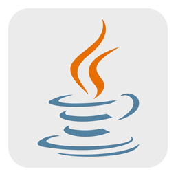
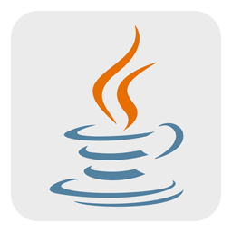

Olá 🖖, sou Vinicius de Oliveira Rebussi tenho 19 anos, estou no meu terceiro ano cursando
Bacharelado em Engenharia de Software no Instituto Federal do
Paraná (IFPR), e atualmente trabalho como estagiário de T.I na Unespar.
Logo abaixo voc√™ encontrará algumas informa√ß√µes sobre mim, clique e descubra üòâ
A oficina foi realizada como atividade da disciplina de Práticas de Extensão do curso de Engenharia de Software do IFPR e teve como objetivo capacitar os idosos do Instituto Maurício Gehlen a identificar notícias falsas e evitar sua disseminação. Foram elaborados conteúdos educativos e dinâmicas interativas adaptadas ao público-alvo, buscando promover inclusão digital e segurança online.
Jovem Aprendiz Administrativo
Indemil – Paranavaí, PR | Julho de 2022 – Fevereiro de 2024
- Apoio em tarefas administrativas e organizacionais.
- Assistência no controle de documentos e relatórios.
- Desenvolvimento de habilidades de comunicação e trabalho em equipe.
Assistente Administrativo de PCM
Indemil – Paranavaí, PR | Fevereiro de 2024 – Agosto de 2024
- Responsável por tarefas administrativas de Planejamento e Controle da Manutenção (PCM).
- Melhoria notável na comunicação e habilidade de trabalhar em equipe.
- Supervisão e coordenação de atividades administrativas para garantir a eficiência dos processos.
Estagiário em Tecnologia da Informação na Unespar
Unespar – Paranavaí, PR | Dezembro 2024 – Atualmente
- Auxilio na crimpagem de cabo de rede tipo T-568A utilizando o conector macho RJ-45.
- Responsável pela formatação de computadores, verificação de drivers, criação de email, manutenção e instalação de impressoras.
Ensino Médio
Escola Leonel Franca, C E C-M-Ef M Profis
Rua Dr Sylvio Vidal Coelho Leite Ribeiro, 1680, Jd São Cristóvão, Paranavaí – PR
Conclusão: 2022
Bacharelado em Engenharia de Software
IFPR - Instituto Federal do Paraná, Campus Paranavaí
Av. José Felipe Tequinha, 1400, Jardim das Nações, Paranavaí – PR
Início: 2023
Tecnologias e ferramentas que utilizo e tenho conhecimento básico:

 
